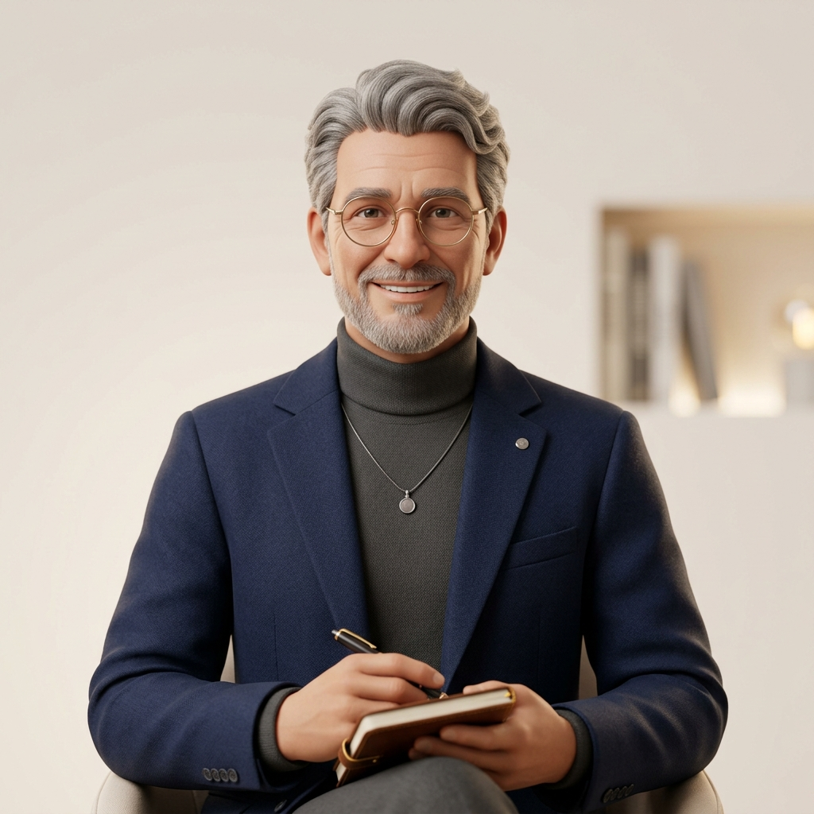
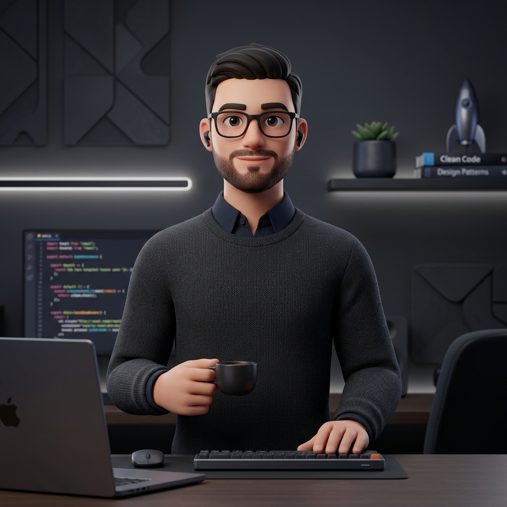
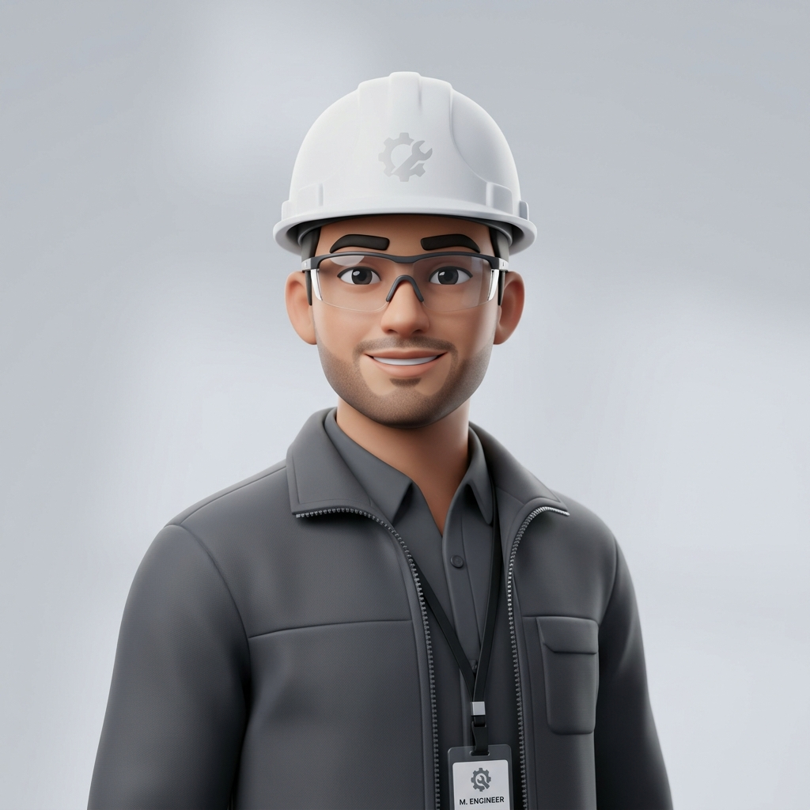
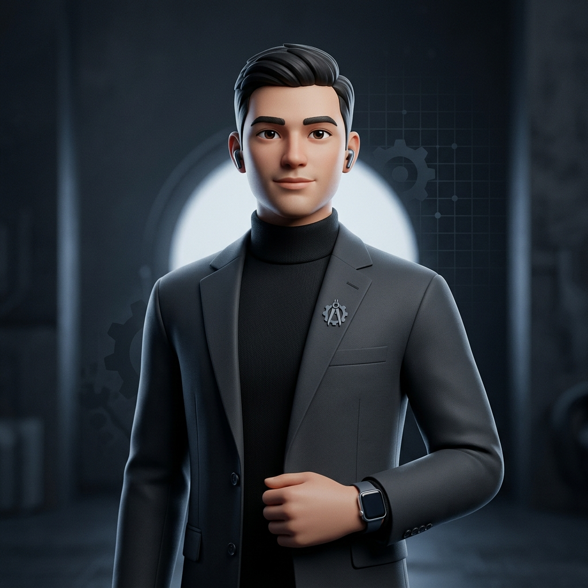
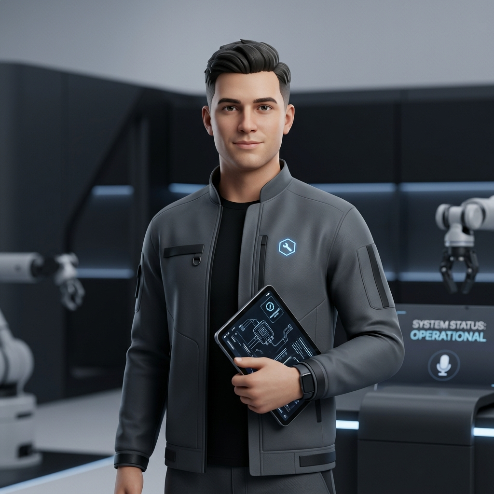
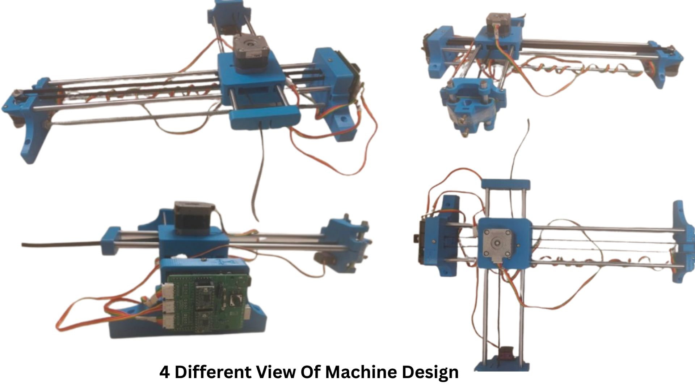

About the Project
VoiceScribe was developed as a Major Project at NIT Agartala, guided by Dr. Debashis Podder. Below you'll find the full mentor profile, team member details, and the complete thesis document for download.
Project Guide

GuideDr. Debashis guided the VoiceScribe project from ideation to working prototype. His expertise spans CNC machining, manufacturing systems design, and assistive technology. He shaped the project's core objective — building an affordable, accessible solution for individuals who cannot hold a pen.
Team Members
Academic Session: 2025–2026 · Dept. of Production Engineering · NIT Agartala

01
02
03
07Development Lifecycle
The project followed a rigorous engineering lifecycle, from initial study to the final verified prototype.
Initially, existing automated writing systems were studied to identify their limitations. Based on the study, the concept of combining speech recognition with an automated handwriting mechanism was finalized.
The mechanical structure of the machine was designed using CAD software. Proper arrangement of motors, rods, belts, and the pen holder was planned to ensure smooth movement and accurate writing.
Custom mechanical parts such as motor mounts and pen holders were fabricated using a 3D printer. All required mechanical and electrical components were collected for assembly.
The frame, rods, belts, pulleys, and motors were assembled carefully. Arduino, CNC Shield, and other electrical components were installed and connected properly.
A web-based interface was developed for voice input and speech recognition. The processed text was converted into G-code, and Arduino was programmed to control motor movement and writing operations.
The software and hardware systems were integrated using serial communication between the computer and Arduino. Proper data transfer and synchronization were ensured.
The machine was calibrated by adjusting belt tension, servo angles, and motor movement. X and Y axis motion was tested to achieve smooth and accurate writing.
The complete system was tested for real-time voice-to-writing performance. Writing accuracy, speed, alignment, and output quality were verified and improved through repeated testing.
Physical Prototype
The physical assembly of VoiceScribe utilizes precision linear motion components and custom 3D printed parts.

Designed for high-accuracy handwriting emulation. The system uses a CNC Shield v3.0 driven by an Arduino Uno.
Academic Report
Abstract
VoiceScribe is a voice-controlled 2D CNC writing machine that enables real-time, voice-to-paper handwriting — designed primarily as an assistive device for individuals with upper-limb motor impairments. The system uses the Web Speech API for voice recognition, a custom JavaScript Hershey-font engine for converting text to vector G-code paths, and the Web Serial API for direct browser-to-Arduino communication. Hardware comprises an Arduino Uno running GRBL, two NEMA 17 stepper motors, an SG90 servo, and a custom 3D-printed frame. Total build cost: under ₹4,000 (~$50) — 10× cheaper than commercial alternatives, with no external software required.
Thesis Chapters
PDF · 1.5 MB · NIT Agartala · 2026